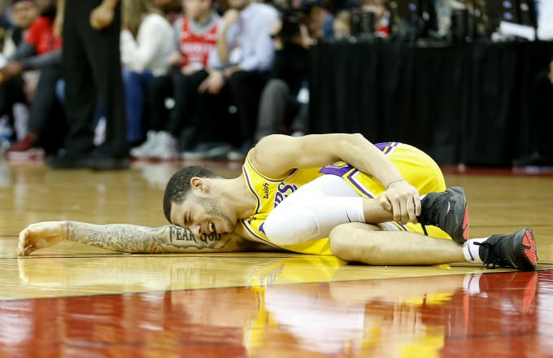
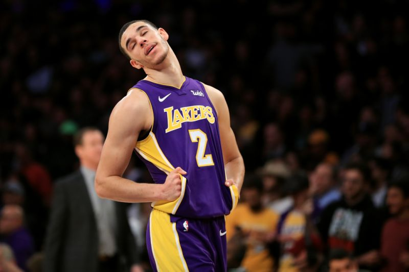

Lonzo Ball is currently suffering from a Grade 3 left ankle sprain, and he will miss the next four to six weeks.
 Lonzo Ball was the second overall pick in the 2017 NBA Draft as a 6-6 point guard for the Los Angeles Lakers. Lonzo has been struggling through injuries in the NBA and hasn't officially lived up to the hype that was originally given to Lonzo. Much of the hype was centered around Lonzo's father, LaVar Ball, who would cause massive social media stunts that would surprise most people as to how one could possibly believe that. That's enough for LaVar Ball, since there is an entire page regarding LaVar Ball and his company called Big Baller Brand. As for what Lonzo has brought to the Laker organization, he has accumulated 10 points per game in his career and is producing more in his sophomore season. With the addition of Lebron James in the free agency last offseason, Lonzo should expect to be considered a role player when a player as dominant as Lebron James is on the court and unfortunately it may limit his ceiling as a player, if he doesn't get to play in clutch situations where one player needs to stand out for the team in order to succeed.